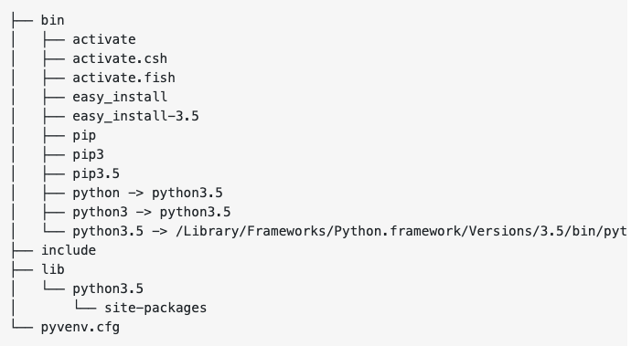
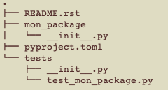

Table des matières :
Les fichiers Python ont pour extension .py
Les commentaires sont indiqués à l'aide de # pour une seule ligne ou """ """ pour plusieurs lignes.
En Python, les blocs ne sont pas encadrés par des {} comme dans la plupart des langages, ce sont les indentations qui indiquent à l'interpréteur le début et la fin d'un bloc. En conséquence, il est important de respecter toujours la même procédure d'indentation. On utilisera 4 espaces plutôt qu'une tabulation pour exprimer une indentation, ceci afin d'assurer une bonne portabilité du code.
En Python, les mots clés à ne pas utiliser comme nom de variable ou de fonction sont les suivants:
and, or, del, from, none, as, global, nonlocal, try, assert, else, if, elif, not, while, for, except, import, with, class, true, false, in, pass, yield, continue, break, finally, is, raise, def, lambda, return.
Pour connaître la version de Python utilisée :
python --versionPour connaître le chemin vers le dossier Python :
which pythonIl est souvent nécessaire de placer en début de code le chemin absolu de l'interpréteur (ici 3.7 représente la version de Python), et de préciser l'encodage UTF-8 :
#!/usr/bin/env python3
# -*-coding:Utf-8 -*Pour télécharger l'environnement de travail Anaconda, il faut d'abord télécharger Anaconda pour Linux, vérifier le sha avec la commande :
sha256sum [nom_fichier_telecharge]puis exécuter le fichier d'installation :
bash Anaconda-[version]-Linux-x86_64.shFinalement, il est possible de tester l'installation en utilisant :
conda listLors de la création d'un projet, il faut spécifier l'environnement dans lequel on travaille, comme par exemple virtualenv ou conda.
L'installation de l'éditeur JetBrains PyCharm-community se fait sur Linux grâce à l'instruction au Terminal :
sudo snap install pycharm-community --classicUne fois qu'on a installé Anaconda, l'exécution se fait grâce à l'instruction :
anaconda-navigatorPour mettre à jour Anaconda :
conda update condaPour connaître l'emplacement de conda :
which condaIl est nécessaire de mettre en pause le programme en fin d'exécution afin de pouvoir lire le résultat. Préciser l'encodage peut s'avérer nécessaire sous Windows.
# -*-coding:Latin-1 -*
import os
# le programme se trouve ici
os.system("pause")Commençons par le traditionnel "Hello world". Contrairement à beaucoup de langages, Python n'utilise pas de ; à la fin de chaque instruction. Il le remplace par un retour à la ligne. Notons que les accolades symbolisant un bloc sont remplacées par une indentation.
print("Hello World");A noter que print entraîne systématiquement un retour à la ligne, contrairement à certains autres langages où il faut rajouter ln pour aller à la ligne. Pour éviter un retour à la ligne, on utilise l'instruction print("hello", end = "")
Pour connaître la version active de Python :
python --version
Pour connaître toutes les versions disponibles au téléchargement de Python3.6 à 3.8 :
pyenv install --list | grep " 3\.[678]"Toutes les versions s'installent dans un fichier .pyenv/versions/, qui vient s'insérer dans le PATH au coeur du système, et non pas directement dans un environnement de développement. Ainsi, un environnement peut utiliser une version particulière de Python en pointant vers l'adresse de stockage de la version, sans qu'elle soit incorporée à cet environnement. Pour installer la version 3.7.2 en particulier :
pyenv install -v 3.7.2Pour supprimer la version 2.7.15 de l'ordinateur :
pyenv uninstall 2.7.15Attention de travailler avec une version 3 de Python et de ne pas supprimer la version 2 système de Python livrée d'usine et servant au fonctionnement de l'ordinateur.
Il est important de bien connaître la version de Python utilisée avant de procéder à tout changement dans un environnement de développement, car chaque version accepte des dépendances différentes.
Pour connaître toutes les versions disponibles sur l'ordinateur (la version active est précédée d'une *) :
pyenv versionsPour connaître l'adresse de la version de Python utilisée :
which python # ou encore
pyenv which pythonPour changer la version de Python en local dans l'environnement de développement :
pyenv local 3.7.1Pour changer la version de Python pour tout l'ordinateur :
pyenv global 2.7.15Pour revenir à la version système :
pyenv global systemIl est nécessaire de travailler dans des environnements virtuels pour isoler les dépendances de chaque projet Python. Pour cela, on utilise le module venv compris dans la librairie standard de Python3. Il est également possible d'utiliser virtualenv à la place de venv, mais ce dernier est déjà compris dans les versions de Python supérieures à 3.5 et ne nécessite donc pas d'installer virtualenv comme une dépendance.
Au terminal, on crée tout d'abord le dossier qui va contenir mes environnements virtuels, puis on se place dedans :
mkdir environnements
cd environnementsOn crée maintenant un nouvel environnement au sein du dossier environnements :
python3 -m venv mon_envPour visualier la structure de mon_env il suffit de taper tree dans le dossier courant.
bin contient les fichiers qui interagissent avec l'environnement virtuel, include contient les en-têtes C qui compilent les packages Python, lib contient une copie de la version Python avec un dossier de packages dans lequel sont installées toutes les dépendances.
Il est maintenant nécessaire d'activer l'environnement virtuel comme environnement de travail. Pour cela, il faut se placer dans le dossier environnements et taper au Terminal :
source mon_env/bin/activateA partir de maintenant, les commandes saisies ont une action dans l'environnement. On remarque que l'environnement est actif, car devant le prompt du Terminal apparaît (mon_env)$.
Pour désactiver cet environnemnt virtuel, il suffit de taper :
deactivatePour installer un module dans l'environnement, il faut d'abord se rendre dans l'environnement puis :
cd mon_env
pip3 install nom_packagePour voir la liste de tous les modules installés :
pip3 freezePour utiliser une version particulière de Python dans l'environnement, il faut d'abord installer cette version sur l'ordinateur, puis se rendre dans l'environnement et définir cette version comme la version locale :
pyenv install 3.8.0
cd mon_env
pyenv local 3.8.0PyCharm crée automatiquement un dossier PyCharmProjects dans lequel il va ranger les différents projets. On peut alors choisir l'interpréteur parmi ceux proposés, et en fonction de ce qui a été installé (conda, virtualenv, une version particulière de Python ...). Pour cela, après avoir ouvert PyCharm, sélectionné le projet, puis File -> Settings -> Project Interpreter.
On peut également utiliser un environnement lié à un projet déjà existant. Pour cela, on commence par créer un dossier dans lequel on crée l'environnement de développement avec venv, puis on ouvre PyCharm, on ouvre le projet existant, File -> Settings -> Project Interpreter. PyCharm devrait avoir reconnu l'environnement de travail et pointer directement vers la bonne version de Python, avoir les bons packages déjà installés. Si ces packages font défaut lors de l'exécution, l'erreur liée au package donne lieu à un signal rouge et un menu qui permet de confirmer l'installation du package.
La fonction print() permet d'afficher une chaîne de caractères et accepte les paramètres suivants :
Python accepte les template litteral, suivant trois formats du plus ancien au plus moderne :
name = "Bob"
"Hello %s" % namename = "Bob"
"Hello {}".format(name)name = "Bob"
f"Hello {name}"L'intérêt du template litteral, outre sa structure simple, est qu'il n'est pas nécessaire de transformer name en string dans le cas où il s'agit d'un float pour pouvoir le concaténer avant de l'afficher. Cela simplifie donc la compréhension du code.
nom = input("Quel est votre nom ?");
print("Bonjour ",nom);age = int(input("Quel est votre âge ?"))
print("Dans deux ans vous aurez ", age+2)Pour installer un package, si la version de Python par défaut est Python3, on utilise l'instruction pip en ligne de commande, si la version de Python par défaut est Python2, on utilise l'instruction pip3 en ligne de commande pour forcer l'ordinateur à pointer vers Python3 :
pip install nom_packageDe la même façon, pour désinstaller un package :
pip uninstall nom_packageEnsuite, pour importer un package dans le code, on peut utiliser l'instruction :
import nomPackageDans ce cas, il faudra appeler chaque fonction en utilisant nomPackage comme préfixe.
nomPackage.maFonction(5)Pour éviter cela, On peut importer un package en précisant un préfixe :
import nomPackage as pChaque fonction du package sera ensuite appelée avec ce même préfixe np.
p.maFonction(5)Lorsqu'il n'y a aucun risque de confusion entre les fonctions de différents packages, on peut utiliser l'instruction suivante qui évite d'ajouter un préfixe à chaque instruction. C'est pratique dans un script, mais déconseillé dans un code complexe pour réduire les erreurs et accroître la scalabilité du code.
from nomPackage import *Pour importer uniquement un module d'un package, par exemple :
import matplotlib.pyplot as pltPour éviter qu'une méthode main() ne se lance à l'importation, on peut utiliser une condition qui lance la méthode uniquement si elle est appelée :
if __name__ == "__main__":
main()Parmi les packages importants, on trouve Matplotlib utilisé pour les graphiques, Numpy utilisé pour manipuler des séries de nombres, Pandas utilisé pour utiliser des données sous une forme de tableur.
Python étant parcitulièrement utilisé dans le milieu scientifique et mathématique, le module math ainsi que le module numpy sont essentiels
import random as rdLa méthode .random() génère un nombre pseudo-aléatoire compris entre 0 et 1.
La méthode .randrange(5, 10, 2) génère un nombre pseudo-aléatoire compris entre 5 et 10 exclus, avec un écart de 2 entre chaque valeur. Sans le 3ème paramètre, la valeur par défaut est 1.
La méthode randint(4, 7) renvoie un entier compris entre 4 et 7 inclus.
Pour remplir une liste de 10 éléments à l'aide de valeurs comprises entre 0 et 50 prises au hasard :
liste = (rd.randrange(50) for i in range(10))Pour remplir un tableau de 10 éléments à l'aide de valeurs comprises entre 0 et 50 prises au hasard :
tableau = [rd.randrange(50) for i in range(10)]La méthode choice(["a", "b", "c"]) renvoie un élément choisit au hasard de la liste ["a", "b", "c"].
La méthode shuffle(liste) mélange les éléments d'une liste en modifiant cette liste. Elle ne renvoie rien.
from math import *| Instruction | Effet obtenu |
|---|---|
| floor(x) | plus grand entier inférieur ou égal à x |
| ceil(x) | plus petit entier supérieur ou égal à x |
| trunc(x) | troncature de x |
| fabs(x) | valeur absolue de x |
| factorial(x) | factorielle de x. Lève une exception ValueError si x n'est pas entier ou si x est négatif |
| fsum(maListe) | valeur exacte de la somme des valeurs d'une liste |
| gcd(a, b) | pgdc de a et b |
| exp(x) | exponentielle de x |
| log1p(x) | logarithme en base e de x |
| pow(x, y) | x puissance y, renvoie un float |
| x**y | x puissance y, renvoie un int |
| sqrt(x) | racine carrée de x |
| acos(x) | arc cosinus de x en radians |
| asin(x) | arc sinus de x en radians |
| atan(x) | arc tangente de x en radians |
| cos(x) | cosinus de x pour x en radians |
| sin(x) | sinus de x pour x en radians |
| tan(x) | tangente de x pour x en radians |
| degrees(x) | convertit l'angle x de radians en degrés |
| radians(x) | convertit l'angle x de degrés en radians |
| acosh(x) | arc cosinus hyperbolique de x |
| asinh(x) | arc sinus hyperbolique de x |
| atanh(x) | arc tangente hyperbolique de x |
| cosh(x) | cosinus hyperbolique de x |
| sinh(x) | sinus hyperbolique de x |
| tanh(x) | tangente hyperbolique de x |
| pi | pi = 3,14 |
| e | e = 2,71 |
En Python les angles sont exprimés en radian par défaut.
pi et e sont les deux constantes mathématiques connues du package math.
from fractions import FractionUn objet de type Fraction est défini de la façon suivante : Fraction(numérateur, dénominateur). Une fois définie, une fraction est affichée systématiquement sous sa forme simplifiée.
La classe Fraction accepte les opérations élémentaires +, -, *, / et permet de conserver une excellente précision de calcul.
import numpy as npNumpy est utilisé pour manipuler des séries de nombres. En particulier, il permet de traiter des listes de nombres comme des tableaux de nombres.
liste_numpy = np.array([10, 20, 30])
liste_divisee = liste_numpy/2Numpy permet notamment de faire la somme des éléments de la liste :
liste_numpy.sum()MatPlotLib est utilisé pour représenter des données en deux dimensions, i.e. pour créer des schémas, des graphiques et des spectres. Ce package comprend notamment le module Pyplot qui permet de créer des graphiques en couleur.
JSON est un format de stockage de données dans un fichier. JSON signifie JavaScript Object Notation.
JSON ne se trouve pas nativement dans l'environnement de travail. Il est donc nécessaire de l'importer.
import json
Les données seront stockées suivant le format clé-valeur d'un dictionnaire. On peut par exemple avoir la structure suivante :
dico = {
'collège_St_André':
[
{
'nom': 'Fremon',
'prenom': 'Antoine',
'pseudo': 'toto',
'moyennes':
{
'6ème': 14,
'5ème': 14,
'4ème': 13,
'3ème': 11.5
}
},
{
'nom': 'Sabert',
'prenom': 'CLementine',
'pseudo': 'clea'
'moyennes':
{
'6ème': 12,
'5ème': 13,
'4ème': 12,
'3ème': 11
}
}
],
#
'collège_bernard':
[
{
'nom': 'Carmeni',
'prenom': 'Loui',
'pseudo': 'lolo',
'moyennes':
{
'6ème': 19,
'5ème': 16,
'4ème': 16,
'3ème': 14
}
},
{
'nom': 'Florimar',
'prenom': 'Capucine',
'pseudo': 'cap'
'moyennes':
{
'6ème': 18,
'5ème': 18,
'4ème': 17,
'3ème': 18
}
}
]
}Pour afficher ce fichier JSON, il faut d'abord le parcourir et le placer dans un dictionnaire qu'on pourra ensuite afficher :
# on crée un dictionnaire local vide
data = dict()
# on ouvre le fichier json en lecture seule
with open("monFichier.json", "r") as file:
# on transforme le fichier json en objet Python
data = json.load(file)Pour écrire sur un fichier JSON, il faut remplacer le fichier de destination par un dictionnaire data. Attention, il faut prendre soin de recopier dans le dictionnaire les valeurs inchangées du fichier JSON, car l'écriture dans le fichier JSON écrase les données présentes dans ce fichier.
data = dict()
with open("monFichier.json", "w", encoding="utf-8") as file:
json.dump(data, file, indent=4)Un package Python est organisé en fichiers ou classes, qui sont regroupées dans des modules. Les noms des packages et des modules seront écrits en minuscule et peuvent contenir des underscore. La structure à adopter est la suivante :
librairie // racine du package
librairie/ // module Python
__init__.py
fichier.py
main.py
.gitignore
setup.py
Le fichier .gitignore devra contenir :
# compiled python modules *.pyc # setup tools distribution folder /dist/ #python egg metadata, regenerated from source files by setuptools /*.egg-info
Le fichier setup.py contient les commandes suivantes :
from setuptools import setup
setup(name = "librairie",
version = "1.0",
description = "ma librairie",
url = "http://github/librairie",
author = "bob",
author_email = "bob@gmail.com",
licence = "xxx",
packages = ['librairie'],
install_requires = [ # list of dependancies
'nomPakage',
],
zip_safe = False)L'installation d'un package en local sur Linux se fait avec la commande pip install librairie.
Pour publier un package sur PyPI, il faut utiliser la commande python setup.py register
Il est possible de créer manuellement les fichiers build, manifestes et dépendances en utilisant pip ou conda. Toutefois, la gestion des compatibilités des dépendances n'est pas toujours assurée et la publication sur PyPI peut s'avérer impossible. Poetry est un outil complet ... Pour installer Poetry il faut écrire le script en ligne de commande :
curl -sSL https://raw.githubusercontent.com/python-poetry/poetry/master/get-poetry.py | python3Ce script installe Poetry et il est nécessaire de relancer le Terminal pour modifier automatiquement le system PATH. On peut vérifier la bonne installation avec la commande :
poetry --versionPour générer un package, il ne faut pas créer de répertoire vide mais écrire directement :
poetry new mon_packagequi crée le package dans un répertoire du même nom.
La structure du package ressemble ainsi à ceci :
Il faut ensuite ajouter des dépendances au fichier .toml dont la version sera enregistrée dans un fichier .lock. Bien qu'il soit possible de les ajouter manuellement, il est préférable d'utiliser la commande suivante qui gère la compatibilité des dépendances :
poetry add un_modulePython est un langage à typage dynamique, i.e. qu'il identifie lui-même les types de variables et autorise les changements de type. La déclaration des variables n'est donc pas nécessaire. L'instruction int(chaine) permet de transformer un String en nombre si cela est possible alors que l'instruction str(nombre) permet de transformer un nombre en String.
Par ailleurs, Python est un langage fortement typé, i.e. qu'il ne convertit pas automatiquement les types de variables, mais requiert une instruction spécifique. Ainsi, la concaténation d'un String avec un entier lève une exception et ne transforme pas l'entier en String.
Pour tester le type d'une variable, on utilise l'instruction type(maVariable). Cette instruction lève une exception si maVariable n'existe pas. En revanche, elle renvoie le type si maVariable a été déclarée mais reste vide.
| Types | Mots-clés |
|---|---|
| entier | int |
| nombre décimal | float |
| nombre complexe | complex |
| chaîne de caractères | str |
| booléen | bool |
Les booléens prennent les valeurs True et False.
Il n'existe pas de type StringBuffer comme en Java pour représenter les chaînes de caractères modifiables.
Python permet de permuter simplement les valeurs de deux variables sans passer par une troisième.
a = 2
b = 5
a, b = b, a| Opérations | Symboles |
|---|---|
| addition | + |
| soustraction | - |
| multiplication | * |
| division | / |
| modulo | % |
| partie entière d'une division | // |
| concaténation | + |
| affectation | = |
| égalité | == |
| incrémentation | ++ |
| décrémentation | -- |
| ET logique | and |
| OU logique | or |
| NON logique | ! ou not |
| Signification | Opérateurs |
|---|---|
| égalité | == |
| égalité (valeur et type) | === |
| différent | != |
| inférieur | < |
| inférieur ou égal | <= |
| supérieur | > |
| supérieur ou égal | >= |
Les constantes n'existent pas en Python. On utilise généralement des variables globales qu'on ne modifie pas.
if condition :
instructions
else :
instructionsL'instruction elif est la contraction de l'instruction else if.
if condition :
instructions
elif condition :
instructions
else :
instructionsL'instruction switch n'existe pas de façon native en Python.
Pour une répétition allant de 0 à 4 :
for i in range(0, 5):
instructionsPour parcourir tous les éléments d'une liste ou d'un tableau:
for elmt in liste:
print(elt) # ou une quelconque instruction sur eltPour parcourir tous les éléments d'une chaîne de caractères:
for elmt in chaine:
print(elt) # ou une quelconque instruction sur eltfor lettre in chaine :
if lettre in "aeiouy" :
instructionswhile condition :
instructionsLe mot clé break permet d'interrompre une boucle et d'exécuter le code qui suit la boucle. Le mot clé continue permet de sauter le tour de boucle courant puis de continuer à exécuter la boucle.
L'indice du 1er caractère d'une chaîne est 0. Pour échapper une apostrophe ou un guillemet, on utilise le signe \.
| Propriétés | Codes |
|---|---|
| taille | len(chaine) |
| élément d'indice i | chaine[i] |
| dernier élément | chaine[-1] |
| convertir en minuscules | chaine.lower() |
| convertir en majuscules | chaine.upper() |
| mettre en majuscule le 1er caractère d'une chaîne | chaine.capitalize() |
| nombre de "d" dans la chaîne | chaine.count("d") |
| remplacement de "d" par "a" | chaine.replace("d", "a") |
| enlever les espaces au début et à la fin d'une chaine | chaine.strip() |
| extrait une sous-chaîne, comprenant la lettre d'indice 3 jusqu'à la lettre d'indice 5 incluse | chaine[3:6] |
| extrait une sous-chaîne, comprenant la lettre d'indice 3 jusqu'à la lettre d'indice 5 incluse | chaine[3:6] |
| comparaison | === |
| concaténation | + |
| retour à la ligne | \n |
| tabulation | \t |
| transformer une chaîne en liste élément par élément | liste = chaine.split() |
| transformer une chaîne avec le séparateur - en liste | liste = chaine.split("-"); |
| transformer une liste en chaîne contenant le séparateur - | chaine = "-".join(maListe) |
| recherche de "non" dans une chaine. Renvoie -1 si le caractère recherché ne se trouve pas dans la chaîne | chaine.indexOf("non") |
| retour à la ligne | \n |
| test si le contenu de la chaîne est numérique. Renvoie un booléen | chaine.isnumeric() |
L'utilisation d'un indice qui n'existe pas dans la chaîne lève une exception de type IndexError.
Il n'est pas possible de modifier un caractère d'une chaîne de la façon suivante chaine[4] = "Antoine". Il s'agit en fait d'une protection des chaînes qui pourront être modifiées par instruction explicite du développeur.
Python utilise indistinctement " ou ' pour encadre une chaîne de caractères, et ne distingue pas les caractères isolés comme Java.
for(let i=0; i<chaine.length; i++){
chaine[i];
}Python permet d'inclure des expressions dans une chaîne de caractères appelées template literal. Pour cela, il faut définir les emplacement avec {} et utiliser la méthode format().
{} est le fils de {}.format("Antoine", "Albert")Il est possible de caster une chaîne de caractères lorsque ceux-ci s'apparentent à des nombres. Pour cela, on utilise les méthodes int() et float(). Cela s'avère utile lorsqu'on demande à un utilisateur de saisir un nombre. Ce dernier est nativement enregistré au format d'une chaîne de caractères qu'il faut caster pour pouvoir appliquer des opérations numériques.
chaine = "12"
nombre = int(chaine)Les tableaux (appelés tuples en Python) contiennent des éléments dont le nombre de bouge pas. On peut toutefois changer ces éléments. Un tableau est considéré comme un type élémentaire en Python.
On peut créer un tableau de la manière suivante :
tab = (element1, element2)L'indice du 1er élément d'un tableau est 0. Attention, on ne modifie pas les éléments d'un tuple, qui sont par définition immuables.
| Propriétés | Codes |
|---|---|
| taille | len(tab) |
| élément d'indice i | tab[i] |
| dernier élément d'une liste | tab[-1] |
| indice d'un élément | tab.index(element) |
Les listes contiennent des éléments dont le nombre peut varier, mais l'indice du 1er élément est 0. Les listes sont compatibles avec les dictionnaires en ce sens qu'une liste peut contenir des dictionnaires et vice versa.
On peut créer une liste de la manière suivante :
liste = [element1, element2, element3]En Python on peut stocker des éléments de différents types dans une liste.
maListe = ["Antoine", 12, false]En Python, l'appel à un indice ne figurant pas dans la liste conduit à une exception de la forme IndexError: list index out of range.
Pour créer une liste vide
maListe = list()| Propriétés | Codes |
|---|---|
| taille | len(maListe) |
| élément d'indice i | maListe[i] |
| dernier élément d'une liste | maListe[-1] |
| modifier l'élément d'indice i | maListe[i] = nouvelleValeur |
| indice d'un élément | maListe.index(element) |
| ajout d'un élément à la fin d'une liste | maListe.append(element) |
| ajout d'un élément au début d'une liste' | maListe.unshift(element) |
| ajout d'un élément à l'indice i | maListe.insert(i, element) |
| concaténation de maListe1 et maListe2 enregistrée dans maListe1 | maListe1.extend(maListe2) |
| suppression du dernier élément et renvoi de sa valeur | maListe.pop() |
| suppression de l'élément d'indice i | del maListe[i] |
| suppression d'un élément défini par sa valeur, seul le 1er element de cette valeur est supprimé | maListe.remove(element) |
| tri d'une liste d'entiers de façon ascendante (cette fonctionnalité modifie la liste d'origine) | maListe.sort() |
| tri d'une liste d'entiers de façon descendante (cette fonctionnalité modifie la liste d'origine) | maListe.sort(reverse=True) |
| inversion des éléments d'une liste | maListe.reverse() |
Une liste vide a pour taille 0.
Si on souhaite afficher une liste sans mise en forme particulière, l'utilisation de print est suffisante.
print(maListe)On peut également afficher les éléments de maListe les uns à la suite des autres.
for i in range(len(maListe)):
print(maListe[i])Python offre la possibilité de parcourir une liste sans référence aux indices, mais en utilisant un itérateur des éléments qui composent la liste. Ceci correspond à l'instruction forEach d'autres langages.
for elmt in maListe:
print(elmt)Python offre deux autres possibilités pour afficher les éléments d'une liste :
for value in enumerate(maListe):
print(value)for i, value in enumerate(maListe):
print("indice {}, valeur {}".format(i,value))Il existe principalement deux manières de copier des listes en Python avec des fonctionnalités différentes. L'affectation par référence pointe vers l'adresse d'une liste, et donc tout changement opéré sur la copie affecte l'original. En revanche, l'affectation par valeurs copie les éléments d'une liste un à un, et donc tout changement opéré sur la copie n'a aucun effet sur l'original. L'affectation par référence consomme moins d'espace mémoire.
maListe = ["a", "b", "c"]
copie_liste = maListe
copie_liste[1] = "hello"
print(maListe)Le code ci-dessus qui copie la liste par référence affiche ['a', 'hello', 'c'], alors que le code ci-dessous qui copie la liste par valeurs affiche
maListe = ["a", "b", "c"]
copie_liste = list(maListe)
copie_liste[1] = "hello"
print(maListe)Ce dernier code est équivalent à :
maListe = ["a", "b", "c"]
copie_liste = list()
for i in range(3):
copie_liste[i] = maListe[i]
copie_liste[1] = "hello"
print(maListe)def carre(x):
return x ** 2
maListe = [1, 2, 3, 4, 5]
print map(carre, maListe) # Affiche [1, 4, 9, 16, 25]def pair(x):
return not bool(x % 2)
maListe = [1, 2, 3, 4, 5]
print filter(pair, maListe) # Affiche [2, 4]Les compréhensions de liste permettent de modifier les éléments d'une liste selon une structure très particulière. Elles produisent des résultats semblables à ceux produits par le package Numpy mais dans le cas plus général que celui des nombres. Par exemple pour mettre les éléments au carré, on procède ainsi :
nouvelleListe = [elt**2 for elt in maListe]Les compréhensions de liste permettent également de filtrer les éléments d'une liste suivant une condition particulière. Par exemple pour rechercher les éléments pairs, on procède ainsi :
nouvelleListe = [elt for elt in maListe if elt%2==0]Les compréhensions de liste sont préférables aux fonctions map et filter.
La conversion d'une liste en chaîne et inversement est nécessaire pour effectuer certains traitements sur lse chaînes de caractères. En effet, les chaînes sont censées être de taille fixe et il n'existe pas de type Stringbuffer comme em Java par exemple.
Pour convertir maListe en maChaine avec le séparateur "," :
maListe = ["h", "e", "l", "l", "o"]
maChaine = "-".join(maListe)
print(maChaine # affiche h-e-l-l-oPour convertir maListe en maChaine sans séparateur :
maListe = ["h", "e", "l", "l", "o"]
maChaine = "".join(maListe)
print(maChaine # affiche helloPour convertir maChaine en maListe :
maListe = maChaine.split(", ")L'utilisation de join avec des listes de compréhension permet l'affichage de plusieurs lignes dans une même chaìne.
annuaire = [
(1, "antoine"),
(5, "celine"),
(6, "herve")
]
print("\n".join(["%d pour %s" % (nbre, nom) for nbre, nom in annuaire]))ce qui affiche : 1 pour antoine
5 pour celine
6 pour herve
Les dictionnaires sont constitués d'un ensemble de clés-valeurs, dans lequel il n'y a aucun ordre. Leur structure est similaire à celle d'un format JSON.
dico ={
"nom" : "Antoine",
"prenom" : "Hervé"
}Pour créer un dictionnaire vide :
dico = dict()Pour accéder à un élément du dictionnaire, il ne faut plus appeler son indice qui n'existe pas mais appeler la clé de la façon suivante :
dico["nom"]Pour ajouter un élément à la fin d'un dictionnaire, il suffit de créer cet élément :
dico["lieuNaissance"] = "Lausanne";for cle in dico.keys():
print(cle)
for valeur in dico.values():
print(valeur)
for cle, valeur in dico.items():
print(f"Clé {cle} - Valeur {valeur}")| Propriétés | Codes |
|---|---|
| taille | len(dico) |
| affichage de tous les éléments sans format spécifique | dico.items() |
| modifier l'élément de clé key | dico["key"] = "value" |
| ajout d'un élément | dico["key"] = "value" |
| suppression d'un élément défini par sa clé sans renvoi de sa valeur | del dico["key"] |
| suppression d'un élément défini par sa clé et renvoi de sa valeur | dico.pop("key") |
Dans le constructeur d'une classe, pour instancier des objets dont les attributs portent le même nom que les clés d'un dictionnaire :
def __init__(self, dico):
for attr_name, attr_value in dico.items():
setattr(self, attr_name, attr_value)De la même façon qu'avec des listes, on peut transformer un dictionnaire en chaìne en spécifiant un séparateur de valeurs (attention, seules les clés seront utilisées) :
dico = {'name' : 'daniel', 'age'
: '30'}
chaine = '#'.join(dico)On obtiendra alors comme résultat : name#age
La méthode setdefault permet d'éviter de lever une exception dans le cas où la clé consultée n'existe pas dans le dictionnaire. Dans ce cas la clé est créée et l'élément en 2ème position est la valeur attribuée à cette clé. Cette méthode est donc à privilégier systématiquement lors de l'appel d'une valeur. Dans l'exemple ci-dessous le code affiche Ford lorsqu'on demande la marque et affiche blanche lorsqu'on demande la couleur qui n'existait pas auparavant. Notons que le dictionnaire a bien été complété d'un élément.
dico = {
'marque': 'Ford',
'modele': 'Fiesta'
}
print(dico.setdefaut('marque', 'Citroen')
print(dico.setdefault('couleur', 'blanche')La déclaration d'une fonction se réalise de la manière suivante :
def nomFonction(parametre) :
instructions
return valeurL'appel de la fonction se fait de la façon suivante :
int valeur = nomFonction(12)Lorsqu'il n'y a pas de valeur de retour, on parle de procédure :
def nomProcedure(parametre) :
instructionsL'appel de la procédure se fait de la façon suivante :
nomProcedure(12);Pour une fonction comme pour une procédure, on peut définir une valeur de paramètre par défaut si celle-ci n'est pas spécifiée, de la manière suivante :
def nomFonction(parametre1, parametre2=43) :
instructions
return valeurBien que la valeur 43 soit attribuée par défaut au parametre2, celui-ci peut prendre n'importe quelle valeur qui lui soit attribuée.
En Python, pour créer des fonctions attendant un nombre inconnu de paramètres, on utilise la syntaxe
def maFonction(*monTableau)
où monTableau est un tableau de parametres.
En Python, l'ajout d'une docstring se fait sous le nom de la fonction, avec une indentation et 3 guillements. Elle peut s'étendre sur plusieurs lignes.
def maFonction(parametre) :
"""documentation
de maFonction"""
instructions
returnOn appelle la documentation en utilisant l'instruction help(maFonction)
En Python, la fonction anonyme est appelée fonction lambda, mais le principe reste identique. On remplace dans ce cas le mot-clé def par lambda et on ne spécifie aucun nom pour la fonction créée.
int maVariable = lambda x :
2*x
print(maVariable(3))str maVariable = lambda parametre :
"Bonjour ",parametre
print(maVariable("Hervé"))On remarque qu'une fonction lambda utilise une construction particuliére et transforme la variable maVariable en fonction.
| Fonctions | Actions |
|---|---|
| Math.min(2, 4) | donne le minimum des paramètres passés en arguments |
| Math.random | génère un nombre aléatoire entre 0 et 1 |
Il s'agit d'une fonction qui sert de paramètre à une autre fonction.
def maFonction(x):
instruction
def autreFonction(maFonction, val):
return maFonction(val)Les conventions pour la doctring sont les suivantes :
def ma_fonction(nom):
"""description generale
Parameters :
nom (str): description de nom
Returns :
nouveau_nom (str): description de nouveau_nom
description en details"""Pour appeler une doctring, il faut taper dans le shell :
help(ma_fonction)Elles se construisent suivant les cas de différentes manières :
try: # cas général
instruction à tester
except:
instruction en cas d'erreur
finally:
instruction dans tous les cas
try: # variable non définie
instruction à tester
except NameError as e:
instruction en cas d'erreur
try: # le type de la variable est incompatible avec l'instruction
instruction à tester
except TypeError as e:
instruction en cas d'erreur
try: # division par 0
instruction à tester
except ZeroDivisionError:
instruction en cas d'erreurPour aller plus loin, la documentation Python officielle The Python Standard Library.
La création d'une classe en Python :
class MaClasse:
MON_ATTRIBUT # attribut de classe
__init__(self, nom, prenom):
self.nom = nom
self.prenom = prenom
def uneMethode(parametre):
instructions
}On remarque que la signature d'une méthode ne comprend pas le type renvoyé par la méthode. Notons également que le constructeur d'une classe en Python est __init__(self). Le mot-clé self doit obligatoirement apparaître parmi les paramètres du constructeur contrairement à d'autres langages. En revanche, il n'est pas nécessaire de définir les attributs, comme nom et prenom dans l'exemple ci-dessus, avant la définition des méthodes. Seuls les attributs de classe s'écrivent en majuscule avec éventuellement des underscores. Ils n'utilisent pas de mot-clé spécifique. En Python les attributs de classe sont en fait vus comme des constantes propres à une classe.
Les méthodes de classes prennent toujours en paramètre le mot-clé self.
L'instanciation d'un objet se fait sans recours au mot-clé traditionnel new des autres langages :
monObjet = MaClasse("Charles", "Hervé")On peut accéder aux attributs de classe à partir d'un objet mais également directement à partir de la classe de la façon suivante :
MaClasse.MON_ATTRIBUTPar défaut toutes les méthodes sont publiques. Pour les rendre protégées il faut ajouter un underscore devant la méthode et pour les rendre privées il faut rajouter deux underscores
def _maMethodeProtegee:
def __maMethodePriveePython Enhancement Proposal 8 requiert le respect des règles suivantes:
PyLint est un logiciel en ligne de commande permettant d'analyser le code en fonction des standards de PEP8.
pip install pylint pylint fichier.py // lance l'analyse de fichier.py